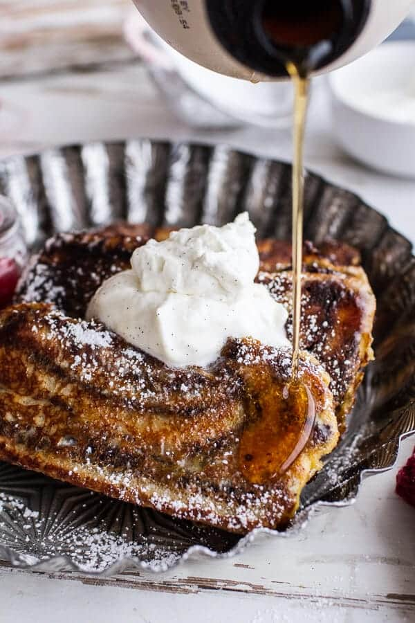

French Toast

Ingredients
- 3 large eggs
- 2/3 cup whole milk
- 1/4 tsp salt
- 1 loaf bread. I personally love to use a chocolate babka for this recipe
- 8 tbsp unsalted butter, softened, divided
- 1/4 tsp ground cinnamon
- Maple syrup for serving
Instructions
- In a large bow, whish eggs, milk, and salt.
- Add a slice of bread to the mixture and briefly soak until coated, 1-2 minutes per side.
- Heat a skillet over medium heat, heat 1 tbsp of butter. Working in batches, cook french toast undisturbed until custard firms up and turns golden on one side, 3-4 minutes. Flip and continue to cook until custard firms up on the other side, about 3 minutes. Repeat with remaining french toast.
- Optionally, use a handheld mixer to whip remaining butter until light and fluffy, 1 to 2 minutes. Add cinnamon and beat until smooth and cohesive.
- Serve french toast with whipped butter and maple syrup.
Home